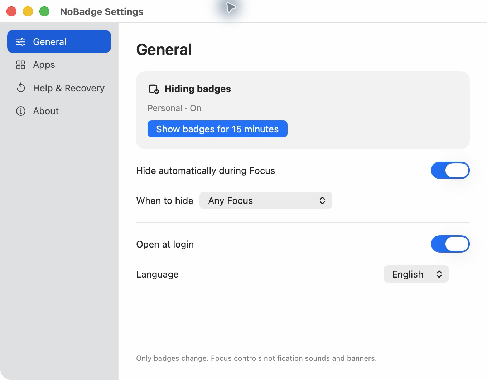

A practical Mac guide
How to hide Dock badges on Mac.
Those red counts can stay visible even when you’re using Focus. Here are your options, and where NoBadge fits.
Turn off badges for one app in macOS
- Open System Settings → Notifications.
- Choose the app you want to change.
- Turn off Badge application icon, if the app offers that option.
This changes that app’s badge setting until you turn it on again. Some apps also have their own badge controls inside their settings.
Use Focus for sounds and banners
macOS Focus lets you decide which people and apps can notify you. It does not reliably hide every app’s Dock badge. A quiet notification stream and a badge-free Dock are separate choices.
Apple explains the system controls in Change Notifications settings on Mac and Set up a Focus on Mac.
Let NoBadge follow your Focus
NoBadge is a small menu bar app that hides supported badge settings during Focus and restores the values it changed afterward. Choose any Focus or selected modes, keep badges for important apps, and show badges temporarily without ending your Focus.

It does not clear unread messages or change notification sounds and banners. Apps with their own badge systems may need their own settings.
Restore your usual setup
If you changed an app’s badge setting manually, return to System Settings → Notifications to change it back. If NoBadge changed it, use Restore & Quit before removing the app. Reopen NoBadge after a force quit to recover pending settings.
Last checked October 13, 2026. Names and options may differ across macOS versions.